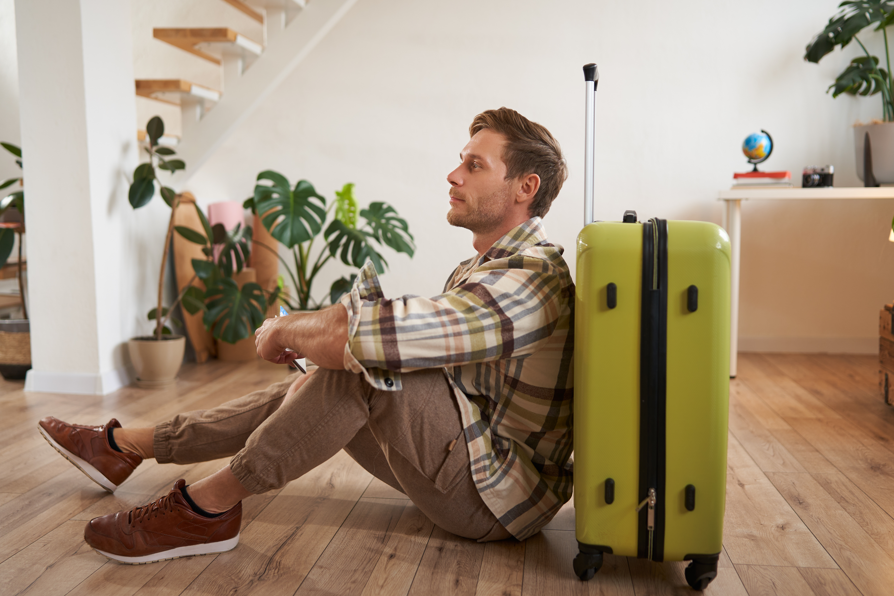

El Arte de Viajar Solo con Equipaje de Mano

Descubre cómo empacar de manera eficiente para viajes largos sin pagar extra por maletas facturadas.
Viajar ligero no es solo una forma de ahorrar dinero en aerolíneas; es una filosofía de libertad. Caminar por calles empedradas sin arrastrar una maleta enorme cambia por completo tu experiencia.
El secreto está en empacar prendas versátiles que combinen entre sí, utilizando la técnica del "rollo" para maximizar espacio y evitar arrugas. Opta por artículos de aseo sólidos (como champú en barra) para no tener problemas con los líquidos en seguridad.
Una vez que descubres la comodidad de viajar solo con una mochila o carry-on, te prometemos que no volverás a documentar equipaje.
← Volver al inicio